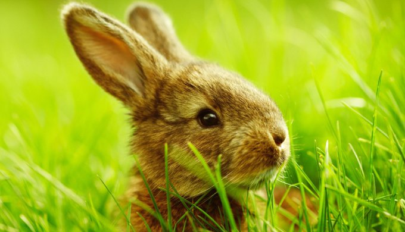
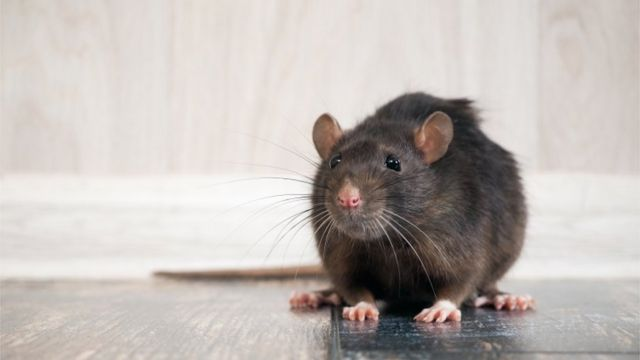

Ingreso al sistema

Cuando hablamos de castración siempre nos viene a la cabeza un perro o un gato. Muchos desconocemos que también pueden castrarse los animales exóticos, en este caso, los roedores, y que hay muchos motivos para hacerlo que debemos conocer, por eso vamos a hablar un poco de ello.
Se recomienda esterilizar a los machos a partir de los 6 meses (la madurez sexual se alcanza a los 6 - 7 meses) y un poco antes en las hembras, a partir de los 4 meses (la madurez sexual se alcanza a los 4 - 6 meses ). Esto reduce el marcaje, la agresión territorial y jerárquica, ya que los conejos pueden tener personalidades muy fuertes. Ésto también mejorará la convivencia, garantizando la estabilidad emocional del grupo.
Con las hembras, es importante no olvidar el riesgo de tumores mamarios o uterinos. Este tipo de tumores afectan a una de cada dos hembras menores de 4 años.
Se trata de una operación quirúrgica bajo anestesia general. Consiste en extraer el útero y los ovarios de las hembras, y los testículos de los machos. Las hembras se vuelven estériles inmediatamente después de la operación, pero este no es el caso de los conejos machos. Es necesario esperar entre 48 y 72 horas antes de ponerlos próximos a una hembra, y su producción hormonal puede durar hasta un mes después de la operación.
Los cambios en el comportamiento generalmente se notan inmediatamente después de la operación. El conejo se vuelve calmado y relajado, más limpio, y ésto solo mejorará con el tiempo. En cambio, si tu conejo es de personalidad fuerte, no perderá este aspecto después de la esterilización.
Las ratas son animales sociables, pero no siempre pueden tenerse individuos del mismo sexo sin que hayan conflictos. La cría de roedores como las ratas no es ética, ya que son muy prolíficas y hay muchos casos de abandono entre estos animales; la solución es tener un trío o una pareja con el macho castrado. Esterilizar la hembra es mucho más complicado por su pequeño tamaño.
Las ratas tienen una elevada incidencia de tumores. Castrar elimina el riesgo de sufrir tumores testiculares.
Un macho castrado es más tranquilo y no marca con orina, por eso la convivencia resulta así más fácil.
Otra ventaja es que el animal deja de sentir frustración sexual, un tipo de estrés poco conocido pero que afecta a los animales macho que no pueden reproducirse teniendo hembras cerca.
Las ratas suelen castrarse cuando tienen unos 6 meses de edad, que ya son sexualmente maduras y están completamente desarrolladas. Aunque esta cirugía puede realizarse a partir de los 4 meses sin ningún problema.
Independientemente de esto, muchas razones justifican la esterilización. La operación es quirúrgica y generalmente consiste en la extirpación de los ovarios en las hembras y la escisión de los testículos a través del tracto escrotal del macho. La esterilización química existe para las hembras, usando proligestona. Pero, a diferencia de la esterilización quirúrgica, la esterilización química sólo dura de 4 a 5 semanas por lo que no es permanente.
Esto permite el control de la reproducción y ciertas formas de agresividad en machos, así como el marcado territorial y los olores asociados. También trata la prevención de tumores testiculares. Después de la esterilización, se aconseja esperar un mes antes de juntarlo con otro hembra. Para las hembras, la esterilización limita la aparición de cánceres mamarios o uterinos.